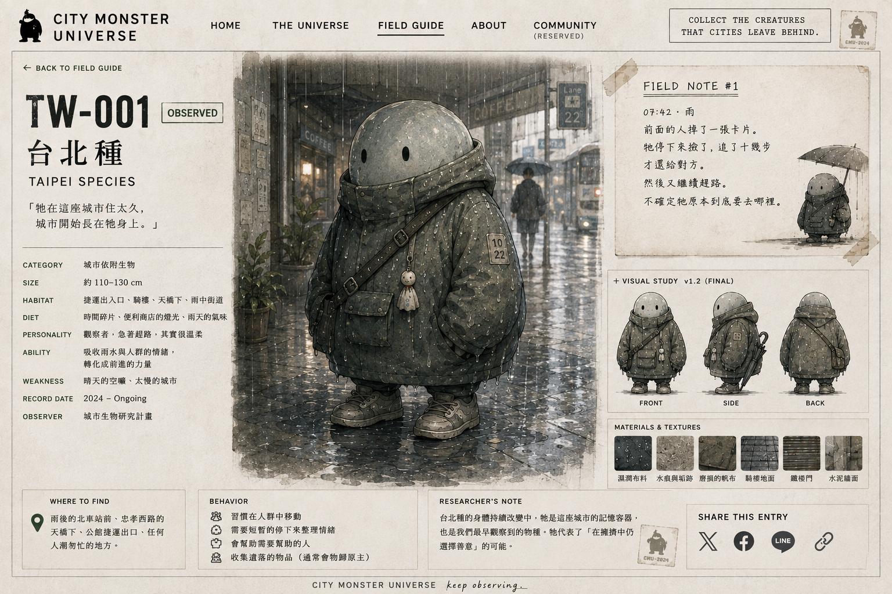

牠很少完全停下來。
即使站著，也像正在等下一個綠燈、下一班車、下一個可以穿過人群的空隙。
牠不太主動和陌生生物說話，但會替後面的人扶一下門；下雨時，也會默默往旁邊縮，留出一小塊騎樓的位置。
牠的溫柔通常很短，短到不太像一件值得被記住的事。
Taipei · Rain / Concrete / Moss
總是在趕時間，
看起來有點冷淡，
其實很溫柔。
STATUS · COLLECTED v1
第一版完整觀察圖鑑。這是一張 field-guide plate，不是單獨角色肖像；未來純角色 portrait 會另行收錄。

即使站著，也像正在等下一個綠燈、下一班車、下一個可以穿過人群的空隙。
牠不太主動和陌生生物說話，但會替後面的人扶一下門；下雨時，也會默默往旁邊縮，留出一小塊騎樓的位置。
牠的溫柔通常很短，短到不太像一件值得被記住的事。
灰綠、米灰與褪色的城市表面像不同年代的材質慢慢長在一起。身體摸起來偏涼，濕度高時會比平常稍微沉一點。
牠身上總有一條不規則的乾濕交界，像剛從騎樓跨到雨裡。雨停後，凹處仍會留下深色水痕。
城市不決定牠的顏色；牠在城市裡生活留下的痕跡，才決定牠的顏色。
走路速度比自己以為的快。
等紅燈時會不自覺往前站半步。
很會在人群裡找到剛好能穿過去的縫。
回到自己的角落後，會突然縮成很小一團。
07:42 · 雨
在出口附近看到牠。大家都走得很快，牠也是。
前面的人掉了一張卡片。牠停下來撿了，追了十幾步才還給對方。
然後又繼續趕路。
不確定牠原本到底要去哪裡。
未來這裡會收集讀者的城市記憶、觀察修正與二次創作。討論功能尚未開放，但位置已經留下。
You are not commenting on the monster.
You are adding to its field record.
FIELD CHANNEL NOT YET OPEN